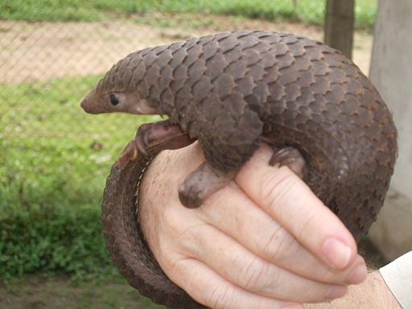

The pangolin, also known as the scaly anteater, are nocturnal mammals found in different parts of Africa and Asia. Feeding mostly on ants and termites with their long tongue, it is easy to see why people compare it to an anteater.
The name pangolin itself is derived from a Malay word that means to roll up. And it's a very fitting name because that's exactly what pangolins do. When they are sleeping or are being threatened by predators, they roll up into a ball as defense. This works because of the scales on their body that acts as an armor when they roll up with their sharp edges.
Pangolins are known for their scales and their meat, to a point where they are hunted to almost extinction. Every species of pangolin is threatened, with two of the eight species being critically endangered. But even with the trading of pangolins illegal, it still happens. Countries are now trying to take act action, but there is a long way to go.